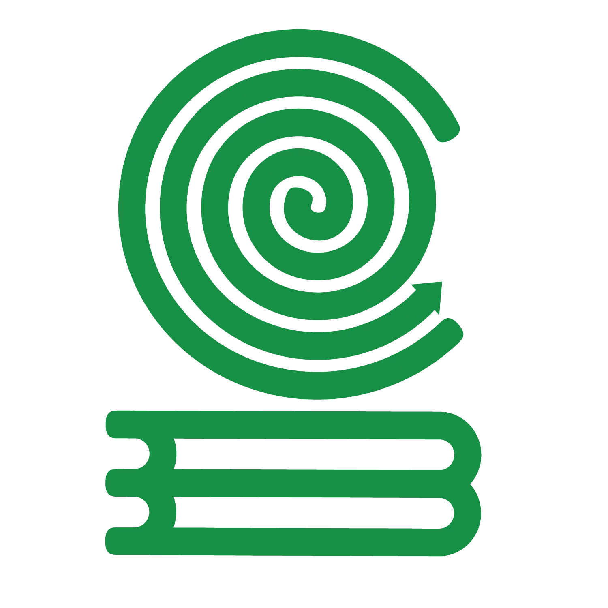
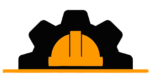
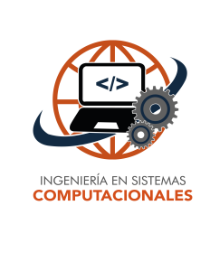
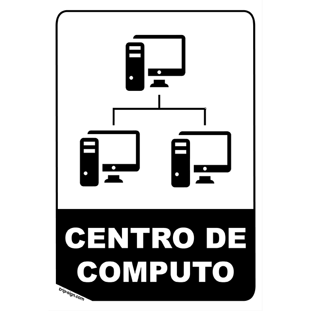

TECNOLÓGICO DE ESTUDIOS SUPERIORES DE CHIMALHUACÁN
LINEA DEL TIEMPO
Inicio del TESChi.
El TESChi inició actividades académicas el 16 de noviembre de 2000, en las instalaciones del Colegio de Bachilleres del Estado de México Plantel No.3.
Contaba con 2 carreras : Licenciatura en Administración e Ingeniería Industrial.

Instalaciones TESChi.
En el año 2004 TESChi opera con sus propias instalaciones, ocupando el edificio; e.
Inicio de actividades.
En el año 2005 el TESChi opera actividades con las carreras de Ingeniería Industrial y la Licenciatura en Administración en la modalidad de sistema abierto.

En este mismo año se hace apertura de dos Ingeniería Mecatrónica e Ingeniería Química.
Firma de convenio.
El 26 de Julio de 2006 se firmó un convenio con el Comité de Instalaciones Educativas del Estado de México para la construcción de 4 aulas.

Construcción Aulas.
En el mes de febrero del 2007 se hacen entrega de las 4 aulas del convenio.

Construccion de Laboratio.
En el mes de marzo del 2008 se hace entrega del laboratio de Métodos del convenio.
Matrícula e Ingeniería.
Para el 2010 la matrícula era de 1516 alumnos.
En el mes de agosto se apertura la carrera de Ingeniería en Sistemas Computacionales con el inicio de 4 grupos, 2 matutinos, 2 vespertinos.

Modelo Educativo y Licenciatura.
En el 2011 se imparte el "Modelo Educativo Basado en Competencias", además llegó la sexta oferta educativa, la Licenciatura en Gastronomía, iniciando clases en septiembre del mismo año.
Edificios.
En enero de 2012 el TESChi contó con 2 edificios más, donde se imparten clases para los estudiantes y uno más en construcción que es utilizado para talleres y laboratorios.
IADEV.
En marzo de 2014 se apertura la septima carrera en modalidad escolarizado, la Ingeniería en Animación Digital y Efectos Visuales.
Postgrado.
En el año 2015 se inició el primer proyecto posgrado: la Maestrá en Administración.

Cómputo y más.
En el mes de julio de 2017 se inauguran dos edificios, el centro de Cómputo y el edificio Multifuncional, que alberga el centro de información, laboratorios de química, laboratio de tiempos y movimientos, además de aulas.

Actualidad.
Actualmente el Tecnológico cuenta, con 10 edificios académicos y una cafetería.